library(tidyverse)## ── Attaching packages ──────────────────────────────────────────────────────────────────── tidyverse 1.3.0 ──## ✓ ggplot2 3.3.2 ✓ purrr 0.3.4
## ✓ tibble 3.0.3 ✓ dplyr 1.0.2
## ✓ tidyr 1.1.1 ✓ stringr 1.4.0
## ✓ readr 1.3.1 ✓ forcats 0.5.0## ── Conflicts ─────────────────────────────────────────────────────────────────────── tidyverse_conflicts() ──
## x dplyr::filter() masks stats::filter()
## x dplyr::lag() masks stats::lag()library(sf)## Linking to GEOS 3.8.1, GDAL 3.1.1, PROJ 6.3.1library(USAboundaries)
library(rmapshaper)## Registered S3 method overwritten by 'geojsonlint':
## method from
## print.location dplyrlibrary(kableExtra)##
## Attaching package: 'kableExtra'## The following object is masked from 'package:dplyr':
##
## group_rowslibrary(units)## udunits system database from /Library/Frameworks/R.framework/Versions/4.0/Resources/library/units/share/udunitslibrary(plotrix)
library(knitr)
library(ggplot2)
library(readxl)
library(dplyr)
library(gghighlight)#1.1
conus = USAboundaries::us_counties() %>%
filter(!state_name %in% c("Puerto Rico", "Alaska", "Hawaii")) %>%
st_transform(5070)#1.2
conus_ms <- us_states() %>%
filter(!(state_name %in% c('Puerto Rico', 'Alaska', 'Hawaii'))) %>%
st_as_sf(coords = c("lng","lat"), crs = 5326) %>%
st_transform(5070)
conus_ms = ms_simplify(conus, keep = 0.05)
county_centroid = st_centroid(conus_ms) %>%
st_combine() %>%
st_cast("MULTIPOINT")#1.3
county_centroid_u = st_union(county_centroid)
v_grid = st_voronoi(county_centroid) %>%
st_cast() %>%
st_as_sf() %>%
mutate(id = 1:n())
t_grid = st_triangulate(county_centroid) %>%
st_cast() %>%
st_as_sf() %>%
mutate(id = 1:n())
sq_grid = st_make_grid(county_centroid, n = c(70, 50)) %>%
st_as_sf() %>%
mutate(id = 1:n())
hex_grid = st_make_grid(county_centroid, n = c(70, 50), square = FALSE) %>%
st_as_sf() %>%
mutate(id = 1:n())#1.4 - 1.7
plot_tess = function(data, title){
ggplot() +
geom_sf(data = data, fill = "white", col = "navy", size = .2) +
theme_void() +
labs(title = title, caption = paste("This tesselation has:", nrow(data), "tiles" )) +
theme(plot.title = element_text(hjust = .5, color = "navy", face = "bold"))
}
plot_tess(data = conus_ms, "Counties Coverage")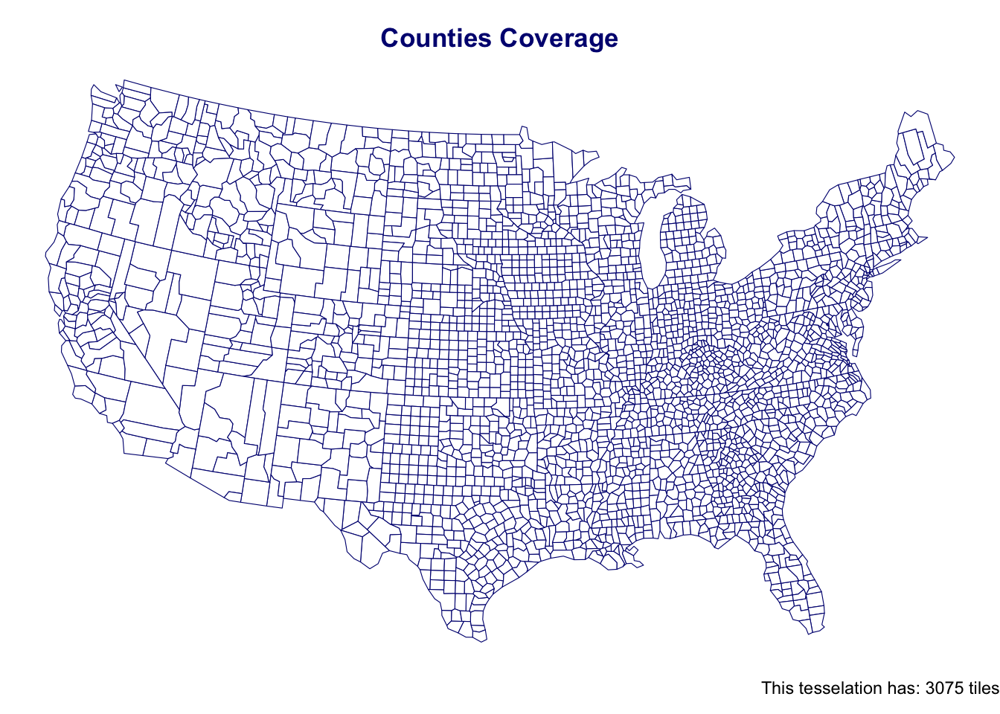
v_grid = st_intersection(v_grid, st_union(conus_ms))
plot_tess(v_grid, "Voronoi Coverage") 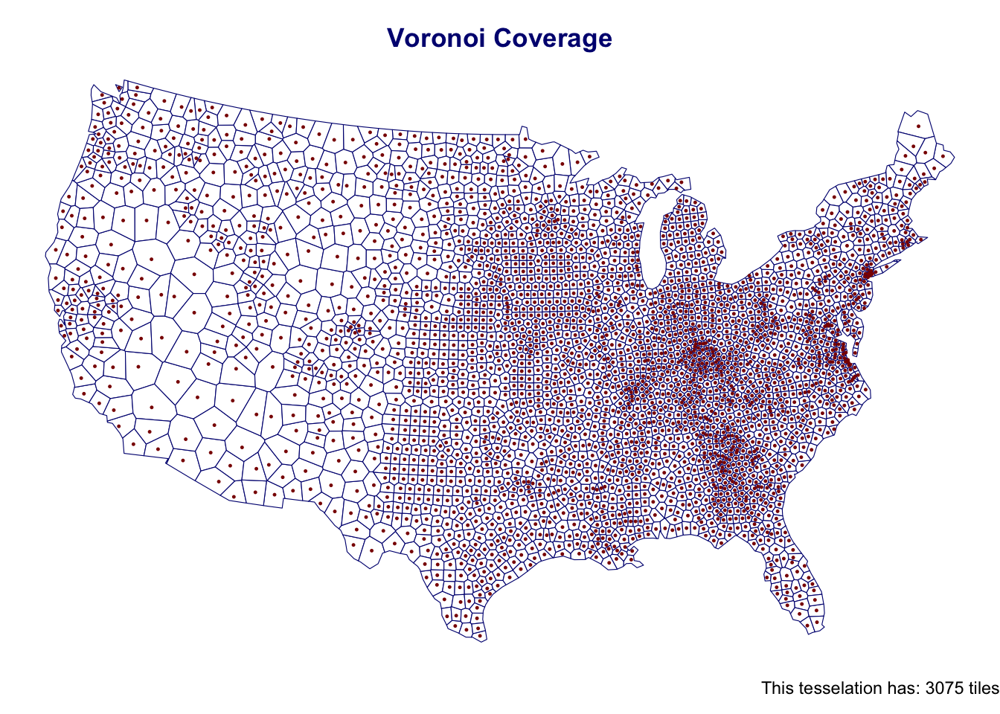
t_grid = st_intersection(t_grid, st_union(conus_ms))
plot_tess(t_grid, "Triangulated Coverage") 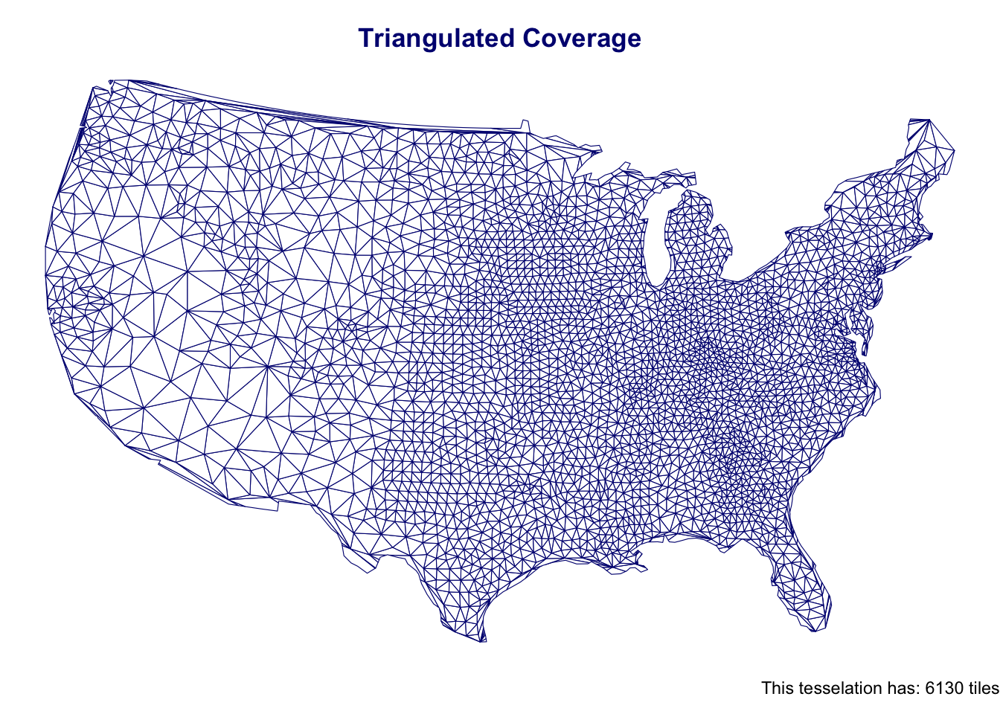
sq_grid = st_intersection(sq_grid, st_union(conus_ms))
plot_tess(sq_grid, "Square Coverage") 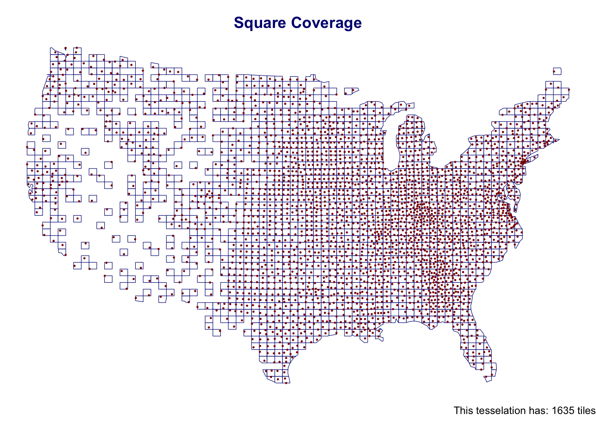
hex_grid = st_intersection(hex_grid, st_union(conus_ms))
plot_tess(hex_grid, "Hexagon Coverage") 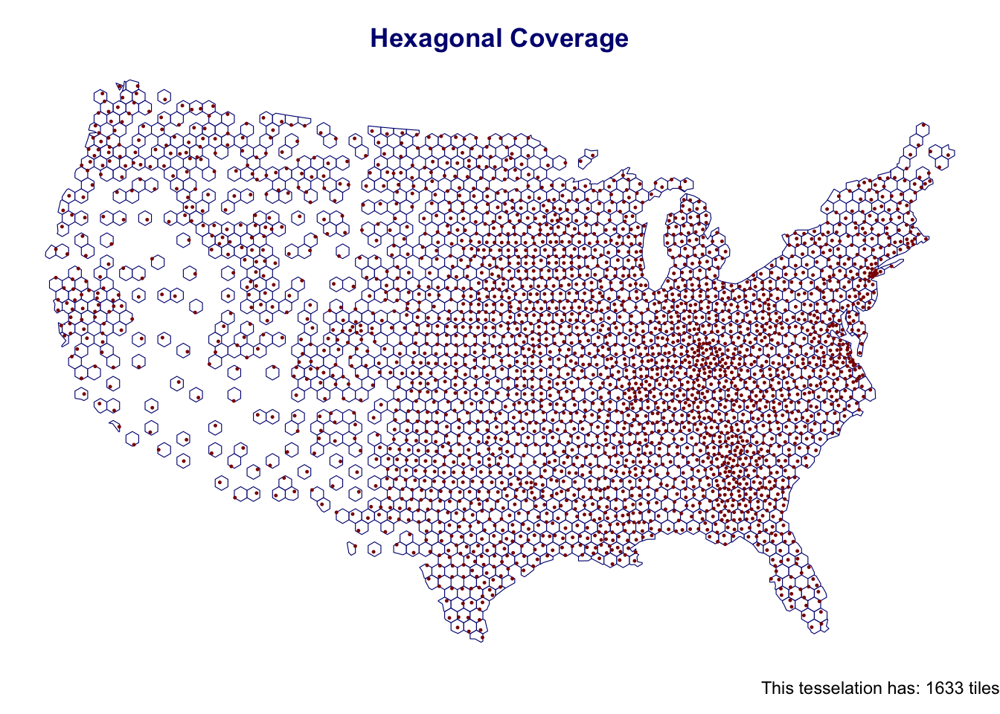
#2.1
total_tess = function(data, title){
area = st_area(data) %>%
units::set_units("km2") %>%
units::drop_units()
data_frame(title, nrow(data), mean(area), sd(area), sum(area))
}#2.2
total_tess(conus_ms, "Raw_original")## # A tibble: 1 x 5
## title `nrow(data)` `mean(area)` `sd(area)` `sum(area)`
## <chr> <int> <dbl> <dbl> <dbl>
## 1 Raw_original 3075 2544. 3428. 7822757.total_tess(v_grid, "Voronoi")## # A tibble: 1 x 5
## title `nrow(data)` `mean(area)` `sd(area)` `sum(area)`
## <chr> <int> <dbl> <dbl> <dbl>
## 1 Voronoi 3075 2544. 2894. 7822757.total_tess(t_grid, "Triangulation")## # A tibble: 1 x 5
## title `nrow(data)` `mean(area)` `sd(area)` `sum(area)`
## <chr> <int> <dbl> <dbl> <dbl>
## 1 Triangulation 6130 1263. 1583. 7740190.total_tess(sq_grid, "Square")## # A tibble: 1 x 5
## title `nrow(data)` `mean(area)` `sd(area)` `sum(area)`
## <chr> <int> <dbl> <dbl> <dbl>
## 1 Square 1635 3484. 401. 5696590.total_tess(hex_grid, "Hexagon")## # A tibble: 1 x 5
## title `nrow(data)` `mean(area)` `sd(area)` `sum(area)`
## <chr> <int> <dbl> <dbl> <dbl>
## 1 Hexagon 1633 3501. 352. 5716720.#2.3
tess_summary = bind_rows(
total_tess(conus_ms, "Raw_original"),
total_tess(v_grid, "Voroni"),
total_tess(t_grid, "Triangulation"),
total_tess(sq_grid, "Square"),
total_tess(hex_grid, "Hexagon"))#2.4
knitr::kable(tess_summary,
caption = "Types of Tessellation",
col.names = c("Name","Numbers","Mean_Area","Sd_Area(km2)","Sum_Area"),
format.args = list(big.mark = ",")) %>%
kableExtra::kable_styling("basic", full_width = TRUE, font_size = 16)| Name | Numbers | Mean_Area | Sd_Area(km2) | Sum_Area |
|---|---|---|---|---|
| Raw_original | 3,075 | 2,543.986 | 3,428.2080 | 7,822,757 |
| Voroni | 3,075 | 2,543.986 | 2,894.3919 | 7,822,757 |
| Triangulation | 6,130 | 1,262.674 | 1,583.2598 | 7,740,190 |
| Square | 1,635 | 3,484.153 | 400.9774 | 5,696,590 |
| Hexagon | 1,633 | 3,500.747 | 352.0933 | 5,716,720 |
#2.5 The different types of tessellation have different type of shapes and result that might effect on calculation on analysis, the counties tessellation is the most regulate shapes on the tessellation it gives good enough information rather the rest. The voronoi tessellation is more spread by proportion of the nearby area and it shape in variety, it used more in convex domain with connect distance. The triangulation tessellation have more on regular triangle shape than voronoi tessellation and if the point is inside the permanent circle of the triangle, it is easy to cause a sharper angle. The square and hexagon tessellation can have less edge effects and offer an alternative to square.
#3.1
nid2019 <- read_excel("/Users/xingxin/Github/geog176a-summer-2020-lab1/NID2019_U.xlsx") %>%
filter(!is.na(LONGITUDE)) %>%
filter(!is.na(LATITUDE))
dam2019 <- nid2019 %>%
st_as_sf(coords = c("LONGITUDE", "LATITUDE"), crs = 4326) %>%
st_transform(5070) %>%
st_filter(conus)#3.2
point_in_polygon = function(points, polygon, id){
st_join(polygon, points) %>%
st_drop_geometry() %>%
dplyr::count(.data[[id]]) %>%
setNames(c(id, "n")) %>%
left_join(polygon, by = id) %>%
st_as_sf()
}#3.3
cpip = point_in_polygon(dam2019, conus_ms, "geoid")
vpip = point_in_polygon(dam2019, v_grid, "id")
tpip = point_in_polygon(dam2019, t_grid, "id")
spip = point_in_polygon(dam2019, sq_grid, "id")
hpip = point_in_polygon(dam2019, hex_grid, "id")#3.4
plot_tess = function(data, title)
{ggplot() +
geom_sf(data = data, aes(fill = log(n)), alpha = .9, size = .2, col = NA) +
scale_fill_viridis_c() +
theme_void() +
theme(legend.position = 'none',
plot.title = element_text(face = "bold", color = "navy", hjust = .5, size = 24)) +
labs(title = title,
caption = paste0(sum(data$n), " Number of Dams "))}#3.5
plot_tess(cpip, "Dams Counties")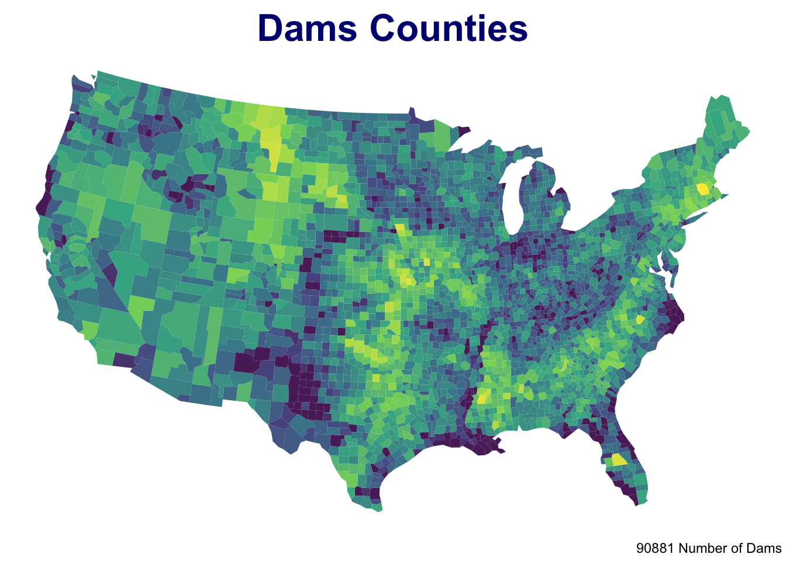
plot_tess(vpip, "Dams Voronoi")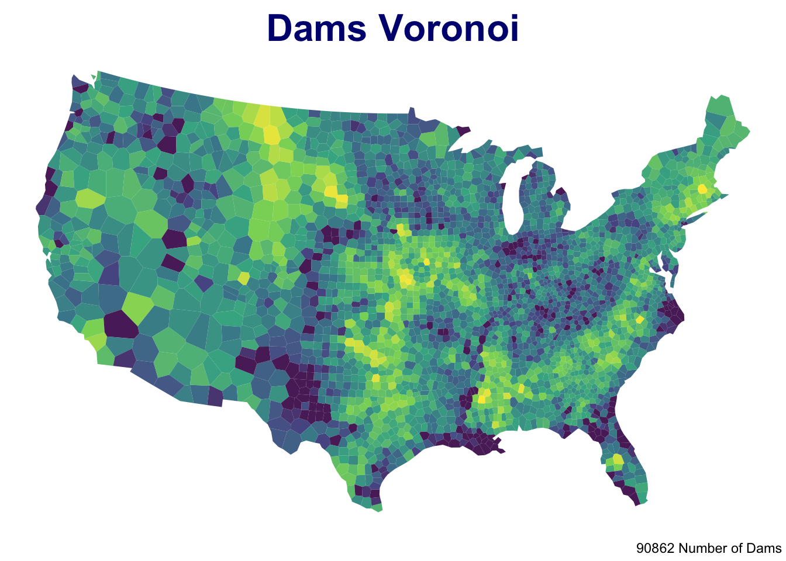
plot_tess(tpip, "Dams Triangulated")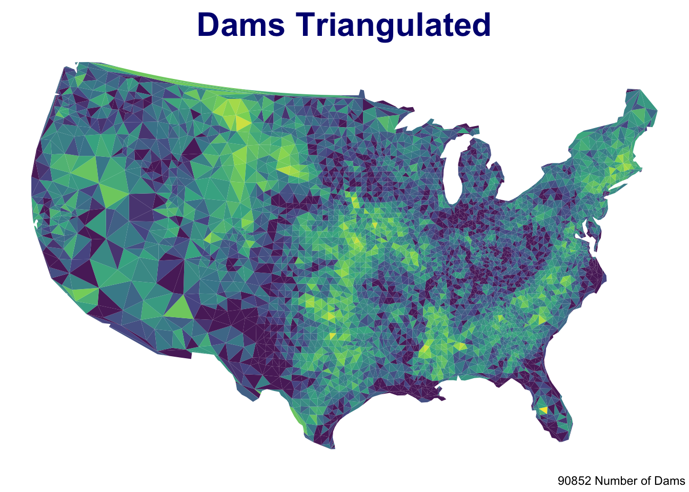
plot_tess(spip, "Dams Square")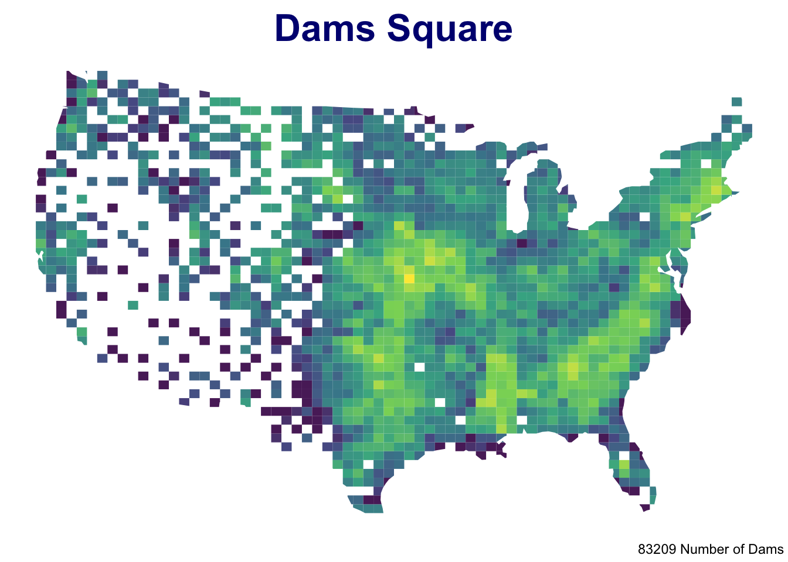
plot_tess(hpip, "Dams Hexagon")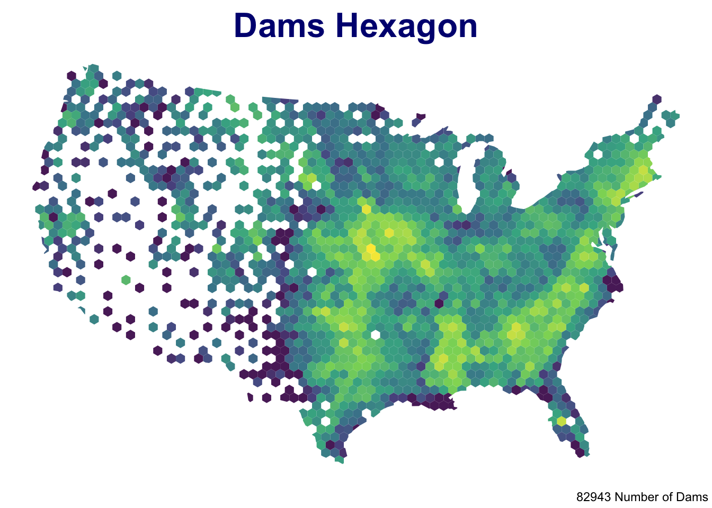
#3.6 According to the lecture note, MAUP is a source of statistical bias that can significantly impact the results of statistical hypothesis tests. Therefore, I will choose the voronoi to moving forward because in these four results, the triangulated tessellation is out of the visualization of seeing the spread of dams in the U.S. and the square and hexagon tessellation is missing some part of the data in the western America. The voronoi tessellation is more match the counties map display and gives a good ratio visualize on the distribution of the dams in the Country.
#4 - 4.1
unique(dam2019$PURPOSES) %>% length## [1] 492nid_classifier = data.frame(abbr = c("C","S","P","F"),
purpose = c("Flood Control","Water Supply","Fire Protection","Fish and Wildlife"))
dam_freq <- strsplit(dam2019$PURPOSES, split = "") %>%
unlist() %>%
table() %>%
as.data.frame() %>%
setNames(c("abbr", "count")) %>%
left_join(nid_classifier) %>%
mutate(lab = paste0(purpose, "\n(", abbr, ")"))#The steps I followed on Mike instrction to indetify how many dams serve each purpose by splitting the PURPOSES values. The data what I choosing to use are Flood Control, Water Supply, Fire Protection, and Fish and Wildlife for my chosen because of the flood controls is the most important thing for natural disaster and Water Supply is huge hydrology industry provide people water usage, the fire protection is because it can avoid fire and the fish and wildlife is maintain the environment cycle.
#4.1 - 4.2
#Flood Control
FC_dam <- dam2019 %>%
filter(grepl("C", dam2019$PURPOSES) == TRUE)
point_in_polygon(FC_dam, v_grid, "id") %>%
plot_tess("Flood Control Dams Map") +
theme_void() +
theme(legend.position = 'none',
plot.title = element_text(face = "bold", color = "navy", hjust = .5, size = 24)) +
gghighlight(n > (mean(n) + sd(n)))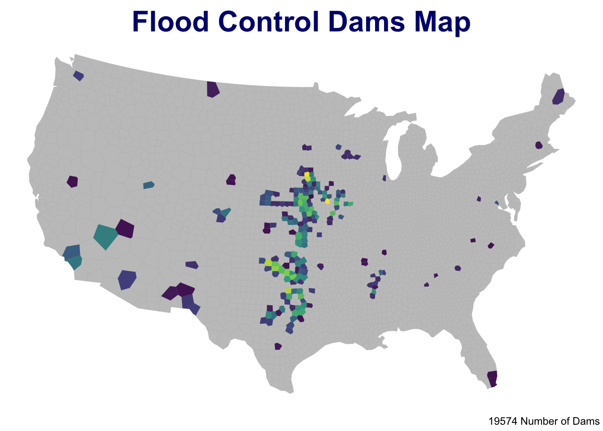
# Water Supply
Was_dam <- dam2019 %>%
filter(grepl("S", dam2019$PURPOSES) == TRUE)
point_in_polygon(Was_dam, v_grid, "id") %>%
plot_tess("Water Supply Dams Map") +
theme_void() +
theme(legend.position = 'none',
plot.title = element_text(face = "bold", color = "navy", hjust = .5, size = 24)) +
gghighlight(n > (mean(n) + sd(n)))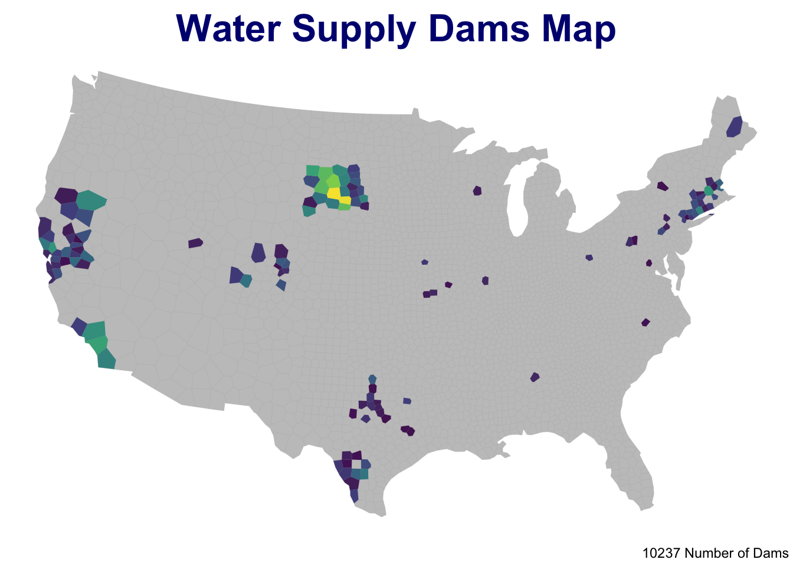
#Protection
FP_dam <- dam2019 %>%
filter(grepl("P", dam2019$PURPOSES) == TRUE)
point_in_polygon(FP_dam, v_grid, "id") %>%
plot_tess("Fire Protection Dams Map") +
theme_void() +
theme(legend.position = 'none',
plot.title = element_text(face = "bold", color = "navy", hjust = .5, size = 24)) +
gghighlight(n > (mean(n) + sd(n)))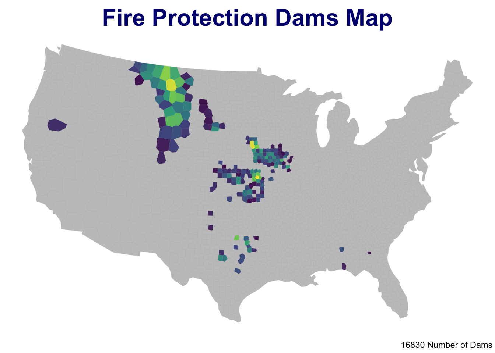
#Fish and Wildlife
Faw_dam <- dam2019 %>%
filter(grepl("F", dam2019$PURPOSES) == TRUE)
point_in_polygon(Faw_dam, v_grid, "id") %>%
plot_tess("Fish and Wildlife Dams Map") +
theme_void() +
theme(legend.position = 'none',
plot.title = element_text(face = "bold", color = "navy", hjust = .5, size = 24)) +
gghighlight(n > (mean(n) + sd(n)))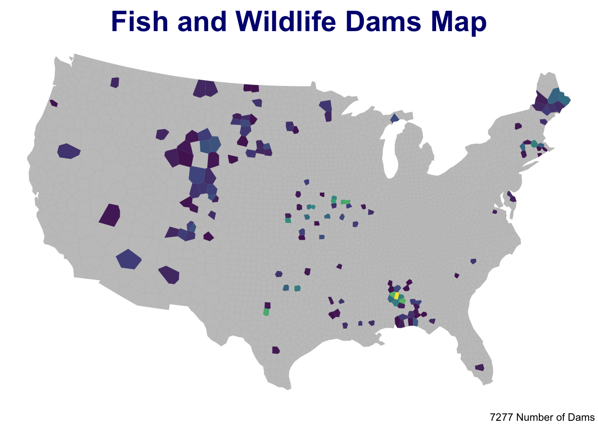
#4.3 In the results, it matches the geographic of the distribution of dams because most of the dams are located nearby the areas of drainage basin, gulfs/bays and the mountain range. It’s good to see all these geographic of the distribution in the US geography. The flood controls are most located in side of the Mississippi River, Water Supply Dam are more located in agricultural area and shortage water area with many population. The Fire Protection are more located in the area have more forest and wood. The Fish and Wildlife area are located more in the Mid-West which is the distribution area of wildlife.